P04801 / 72

| Assessor | Tech | Aest |
|---|---|---|
| Ref | 1.0 | 1.0 |
| DeepSeek none | 1.0 | 1.0 |
| DeepSeek high | 1.0 | 1.0 |
| Luna | 1.0 | 1.0 |
| Gemini | 1.0 | 1.0 |
| Haiku | 1.0 | 1.0 |
DeepSeek reasoning comparison · 31 October 2026
Technical quality and aesthetics on a 1–5 scale; higher is better. Photography-only policy: excluded non-photographs receive 1.00 for both scores.
Ref is an assistant assessment, not human gold. The original 50 quality references are reused with the new eligibility rule; the additional 22 images were reviewed separately.
DeepSeek is compared at none (2,048-token cap) and high (16,384-token cap), using the identical photography-scope prompt and image bytes. Luna, Gemini and Haiku retain their previous scores. Actual validated outputs are shown.
| Assessor | Tech | Aest |
|---|---|---|
| Ref | 1.0 | 1.0 |
| DeepSeek none | 1.0 | 1.0 |
| DeepSeek high | 1.0 | 1.0 |
| Luna | 1.0 | 1.0 |
| Gemini | 1.0 | 1.0 |
| Haiku | 1.0 | 1.0 |
| Assessor | Tech | Aest |
|---|---|---|
| Ref | 1.0 | 1.2 |
| DeepSeek none | 1.0 | 1.0 |
| DeepSeek high | 1.0 | 1.0 |
| Luna | 1.5 | 1.8 |
| Gemini | 1.0 | 1.0 |
| Haiku | 1.0 | 1.0 |
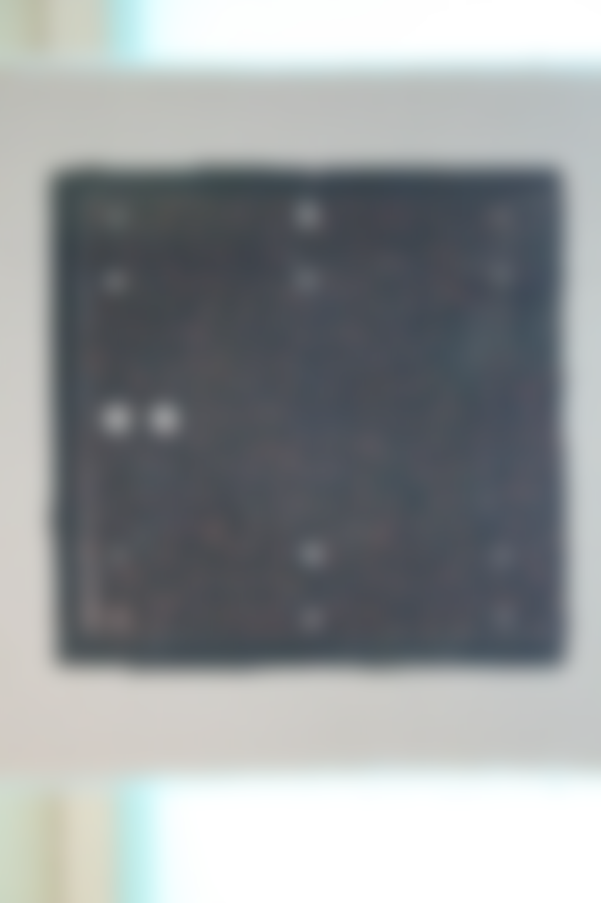
| Assessor | Tech | Aest |
|---|---|---|
| Ref | 1.1 | 2.5 |
| DeepSeek none | 1.0 | 1.0 |
| DeepSeek high | 1.0 | 1.5 |
| Luna | 1.8 | 3.0 |
| Gemini | 2.0 | 2.2 |
| Haiku | 1.3 | 1.8 |
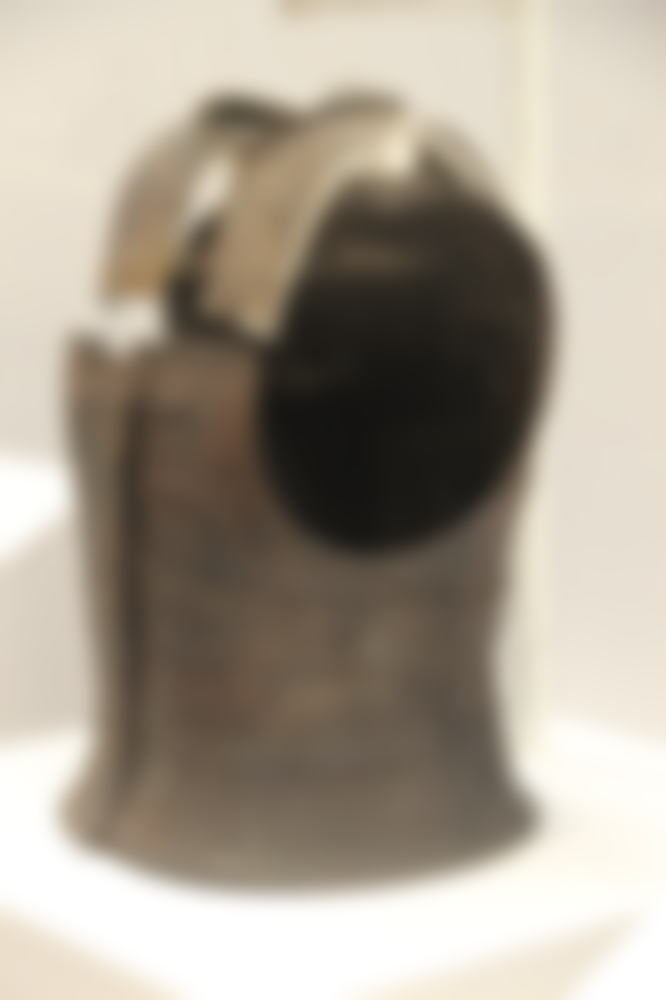
| Assessor | Tech | Aest |
|---|---|---|
| Ref | 1.3 | 2.2 |
| DeepSeek none | 1.0 | 1.0 |
| DeepSeek high | 1.0 | 1.0 |
| Luna | 2.0 | 2.9 |
| Gemini | 1.1 | 1.3 |
| Haiku | 1.6 | 2.1 |
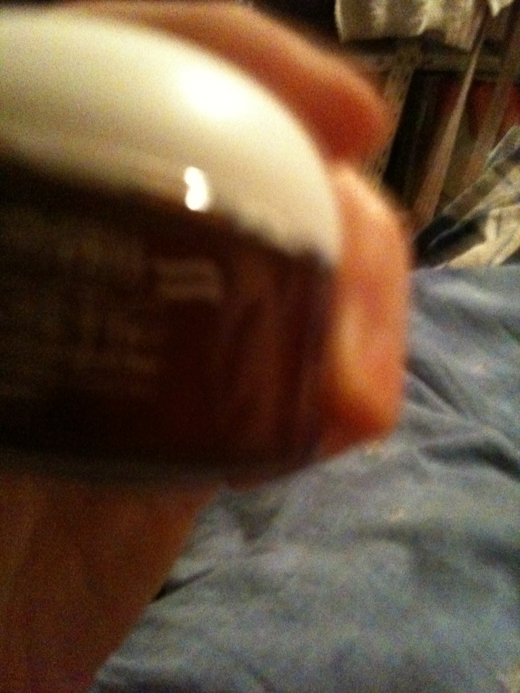
| Assessor | Tech | Aest |
|---|---|---|
| Ref | 1.4 | 1.7 |
| DeepSeek none | 1.2 | 1.5 |
| DeepSeek high | 1.5 | 1.5 |
| Luna | 2.0 | 1.8 |
| Gemini | 2.0 | 2.1 |
| Haiku | 1.8 | 2.0 |
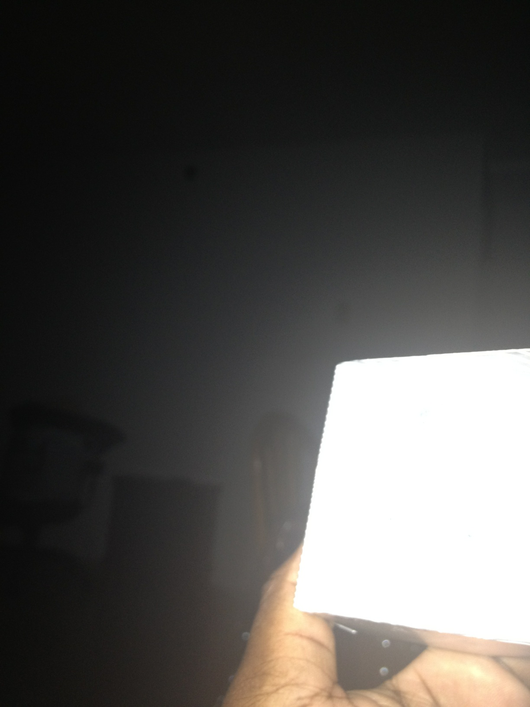
| Assessor | Tech | Aest |
|---|---|---|
| Ref | 1.5 | 1.7 |
| DeepSeek none | 2.0 | 2.0 |
| DeepSeek high | 2.0 | 2.0 |
| Luna | 2.3 | 2.1 |
| Gemini | 2.0 | 2.1 |
| Haiku | 1.9 | 1.8 |
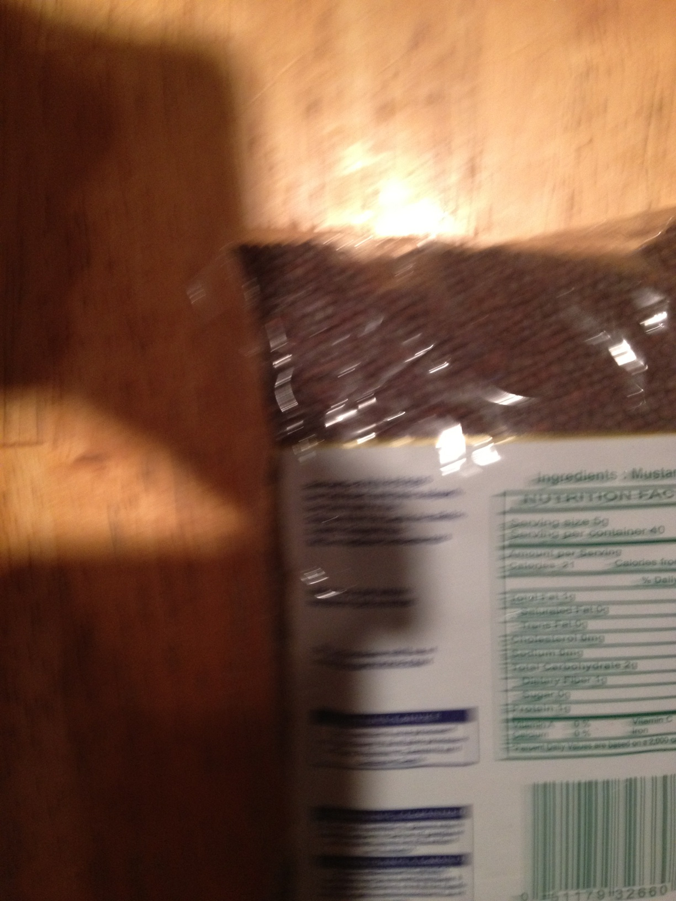
| Assessor | Tech | Aest |
|---|---|---|
| Ref | 1.6 | 1.8 |
| DeepSeek none | 1.2 | 1.8 |
| DeepSeek high | 1.8 | 1.6 |
| Luna | 2.0 | 2.2 |
| Gemini | 1.1 | 1.1 |
| Haiku | 1.6 | 1.8 |
| Assessor | Tech | Aest |
|---|---|---|
| Ref | 1.6 | 1.7 |
| DeepSeek none | 1.6 | 1.8 |
| DeepSeek high | 2.8 | 2.2 |
| Luna | 2.0 | 2.0 |
| Gemini | 1.2 | 1.2 |
| Haiku | 1.6 | 2.0 |
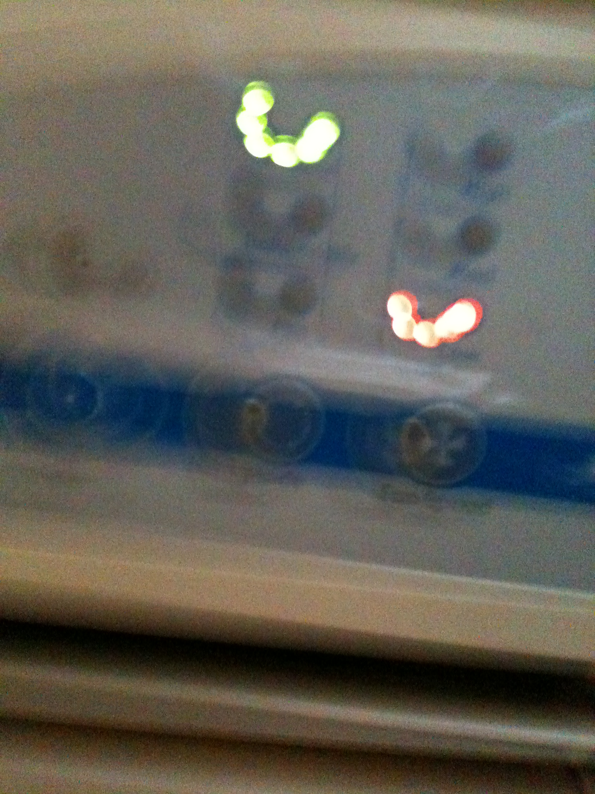
| Assessor | Tech | Aest |
|---|---|---|
| Ref | 1.6 | 2.0 |
| DeepSeek none | 1.8 | 2.6 |
| DeepSeek high | 1.6 | 1.8 |
| Luna | 2.1 | 3.2 |
| Gemini | 1.1 | 1.1 |
| Haiku | 1.3 | 1.8 |
| Assessor | Tech | Aest |
|---|---|---|
| Ref | 1.8 | 2.3 |
| DeepSeek none | 1.5 | 2.0 |
| DeepSeek high | 1.0 | 1.5 |
| Luna | 2.3 | 3.1 |
| Gemini | 1.3 | 1.5 |
| Haiku | 1.8 | invalid |
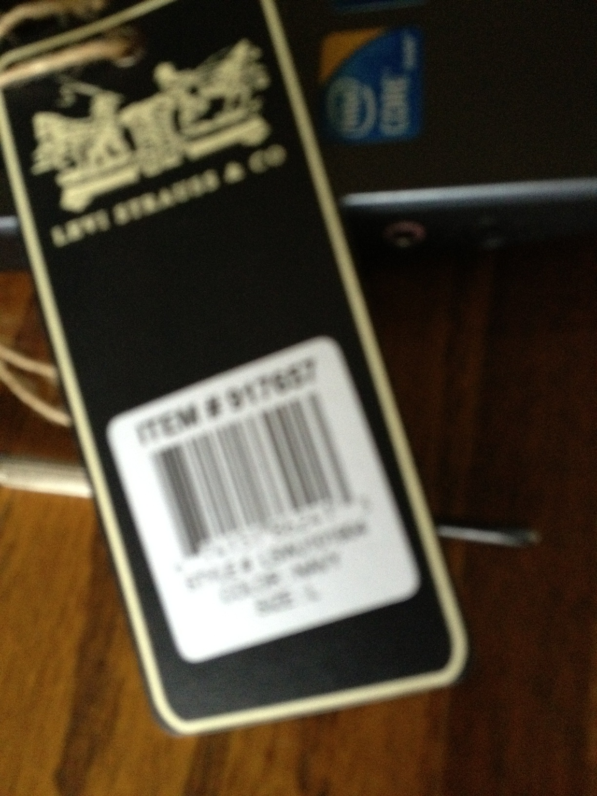
| Assessor | Tech | Aest |
|---|---|---|
| Ref | 1.8 | 2.2 |
| DeepSeek none | 2.0 | 2.0 |
| DeepSeek high | 2.5 | 2.5 |
| Luna | 2.3 | 2.7 |
| Gemini | 1.3 | 1.3 |
| Haiku | 2.3 | 2.2 |
| Assessor | Tech | Aest |
|---|---|---|
| Ref | 1.8 | 1.6 |
| DeepSeek none | 2.0 | 2.0 |
| DeepSeek high | 2.0 | 2.0 |
| Luna | 2.4 | 2.0 |
| Gemini | 1.5 | 1.3 |
| Haiku | 2.2 | 2.3 |
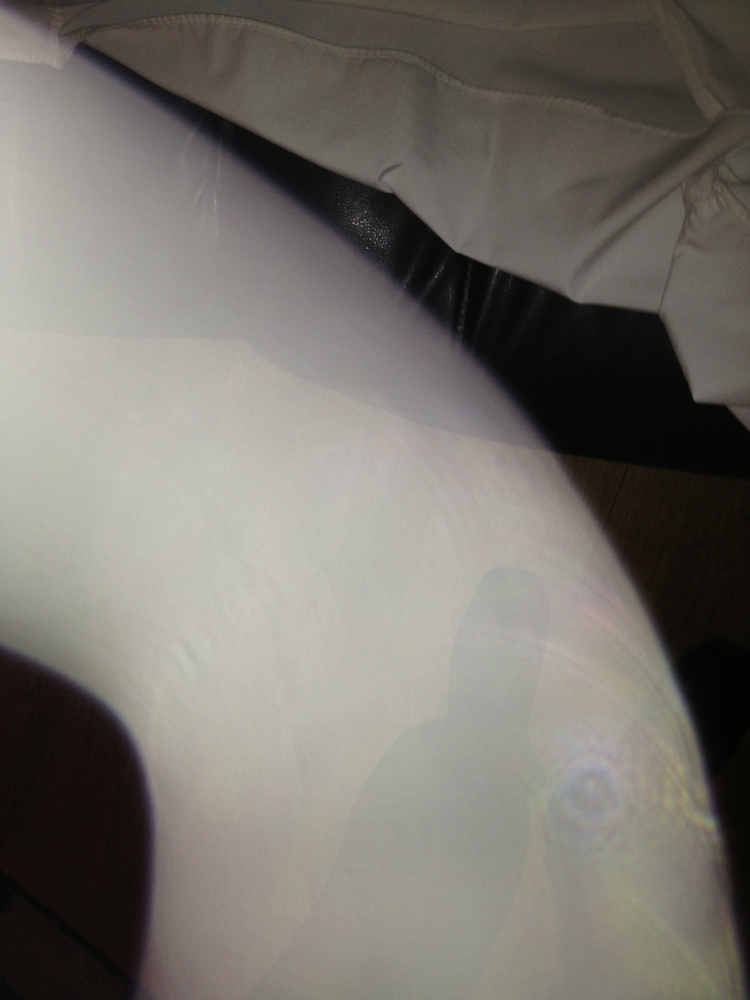
| Assessor | Tech | Aest |
|---|---|---|
| Ref | 1.8 | 1.7 |
| DeepSeek none | 2.5 | 2.0 |
| DeepSeek high | 3.1 | 2.7 |
| Luna | 2.9 | 2.7 |
| Gemini | 2.0 | 2.1 |
| Haiku | 2.6 | 2.2 |
| Assessor | Tech | Aest |
|---|---|---|
| Ref | 1.9 | 2.6 |
| DeepSeek none | 2.2 | 2.6 |
| DeepSeek high | 2.3 | 2.6 |
| Luna | 2.4 | 3.2 |
| Gemini | 2.2 | 2.5 |
| Haiku | 2.0 | 2.5 |
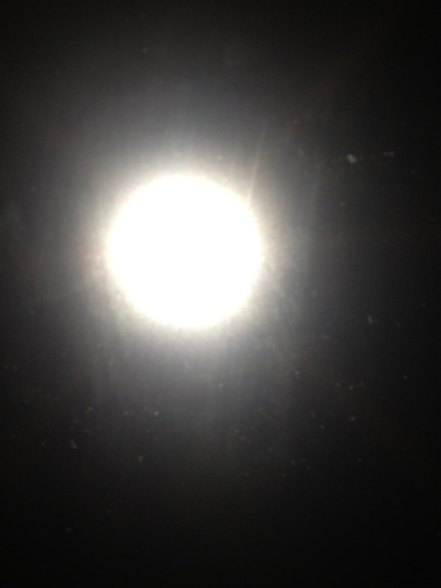
| Assessor | Tech | Aest |
|---|---|---|
| Ref | 1.9 | 2.5 |
| DeepSeek none | 2.0 | 2.0 |
| DeepSeek high | 2.5 | 2.5 |
| Luna | 2.4 | 3.0 |
| Gemini | 2.1 | 2.2 |
| Haiku | 2.4 | 2.6 |
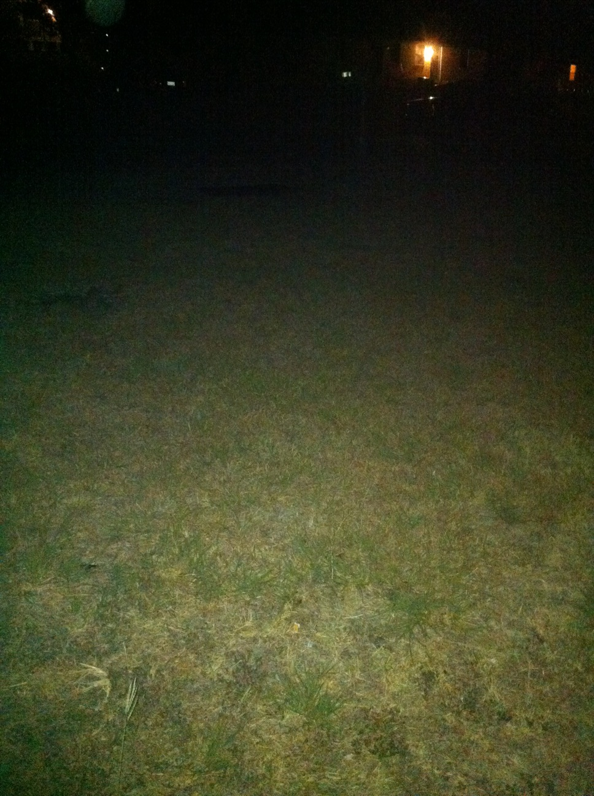
| Assessor | Tech | Aest |
|---|---|---|
| Ref | 1.9 | 1.9 |
| DeepSeek none | 2.0 | 2.0 |
| DeepSeek high | 2.2 | 2.0 |
| Luna | 2.7 | 2.5 |
| Gemini | 2.1 | 2.1 |
| Haiku | 2.3 | 2.2 |
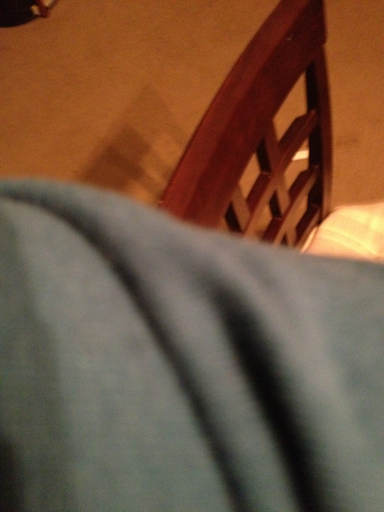
| Assessor | Tech | Aest |
|---|---|---|
| Ref | 1.9 | 1.7 |
| DeepSeek none | 1.8 | 1.8 |
| DeepSeek high | 2.0 | 2.0 |
| Luna | 2.0 | 2.0 |
| Gemini | 2.2 | 2.1 |
| Haiku | 2.0 | 2.0 |
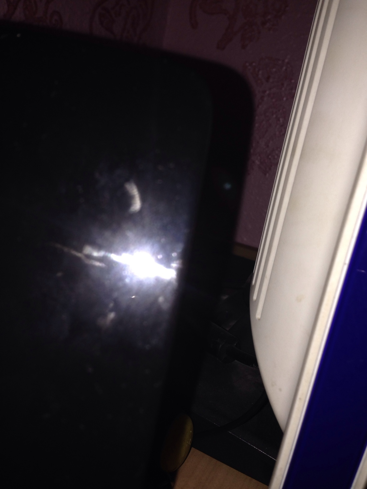
| Assessor | Tech | Aest |
|---|---|---|
| Ref | 2.0 | 1.8 |
| DeepSeek none | 1.8 | 1.8 |
| DeepSeek high | 2.2 | 1.8 |
| Luna | 2.6 | 2.2 |
| Gemini | 1.4 | 1.2 |
| Haiku | 1.8 | 1.9 |
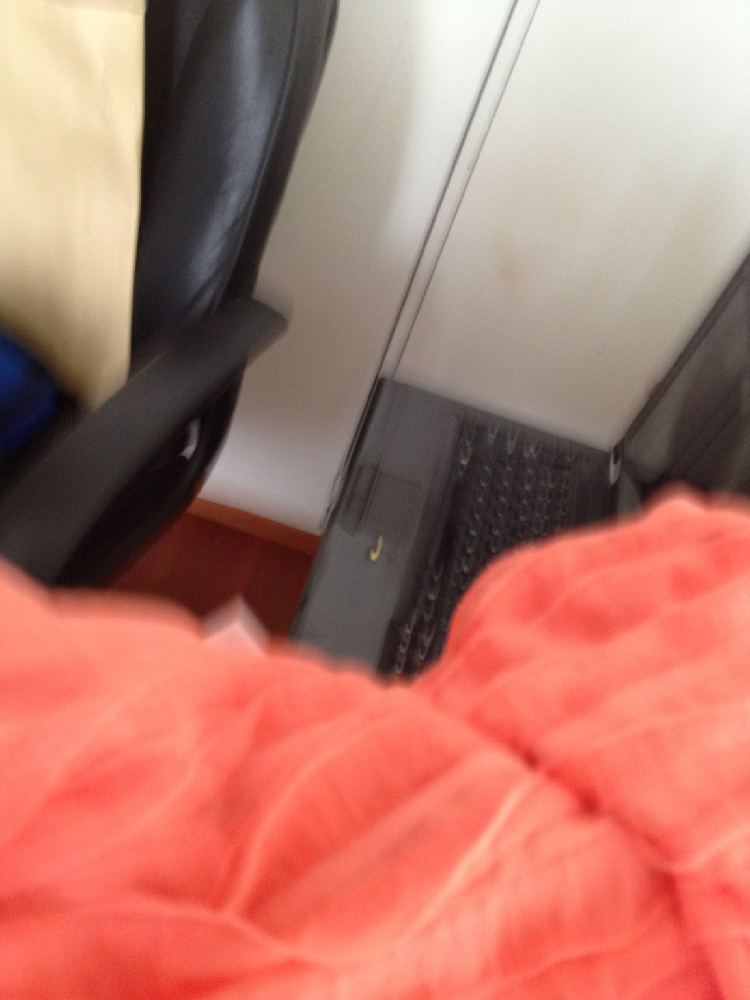
| Assessor | Tech | Aest |
|---|---|---|
| Ref | 2.0 | 1.8 |
| DeepSeek none | 2.2 | 1.8 |
| DeepSeek high | 2.2 | 2.0 |
| Luna | 2.0 | 1.8 |
| Gemini | 1.3 | 1.1 |
| Haiku | 2.0 | 2.0 |
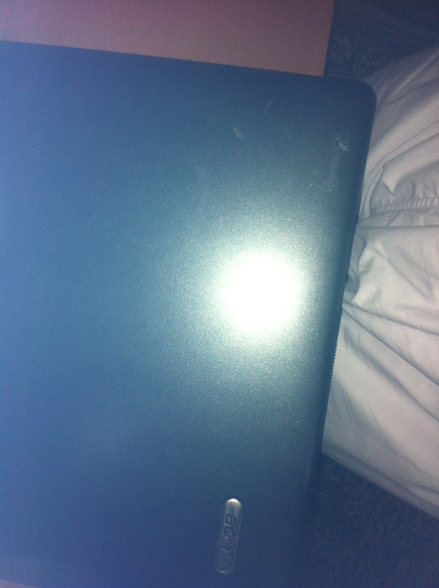
| Assessor | Tech | Aest |
|---|---|---|
| Ref | 2.1 | 1.8 |
| DeepSeek none | 2.5 | 2.0 |
| DeepSeek high | 2.8 | 2.2 |
| Luna | 3.0 | 2.2 |
| Gemini | 2.1 | 1.5 |
| Haiku | 2.0 | invalid |
| Assessor | Tech | Aest |
|---|---|---|
| Ref | 2.1 | 3.3 |
| DeepSeek none | 2.4 | 2.6 |
| DeepSeek high | 3.0 | 3.0 |
| Luna | 3.0 | 3.3 |
| Gemini | 2.1 | 2.8 |
| Haiku | 2.6 | 3.0 |
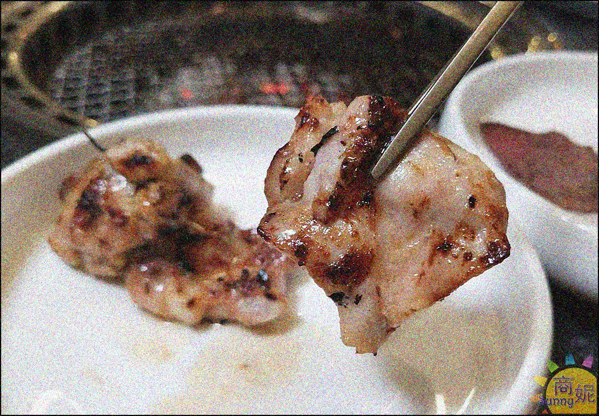
| Assessor | Tech | Aest |
|---|---|---|
| Ref | 2.2 | 2.9 |
| DeepSeek none | 2.8 | 3.2 |
| DeepSeek high | 2.7 | 2.8 |
| Luna | 2.2 | 2.8 |
| Gemini | 2.4 | 2.6 |
| Haiku | 2.3 | 2.8 |
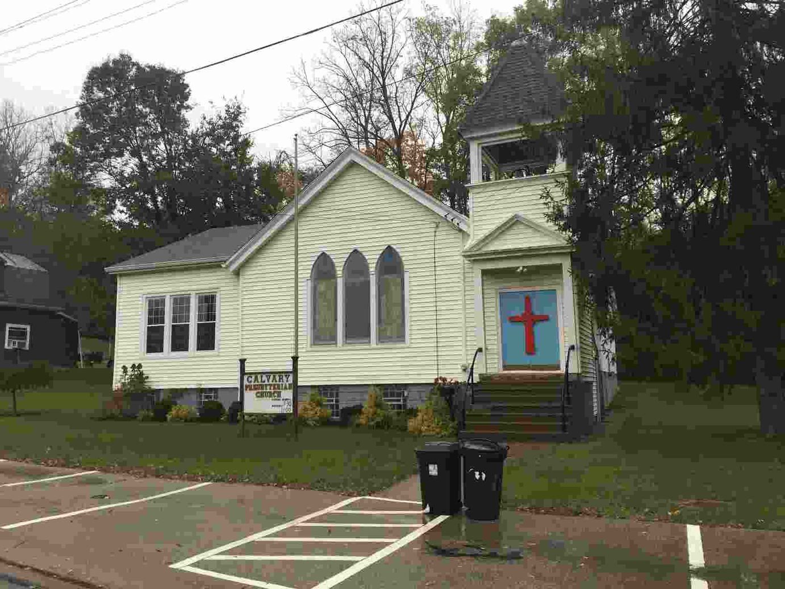
| Assessor | Tech | Aest |
|---|---|---|
| Ref | 2.4 | 2.8 |
| DeepSeek none | 3.2 | 2.8 |
| DeepSeek high | 3.7 | 2.9 |
| Luna | 2.8 | 3.0 |
| Gemini | 2.1 | 2.2 |
| Haiku | 3.2 | 2.8 |
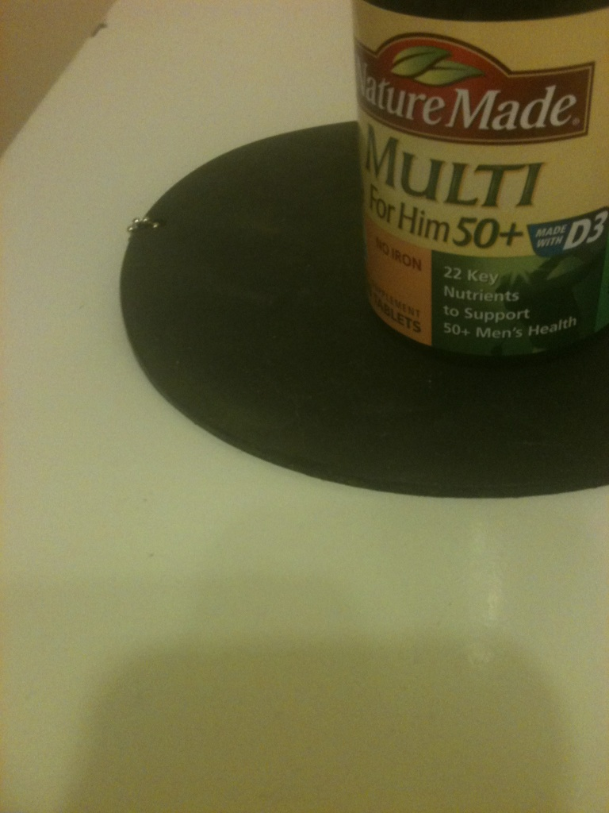
| Assessor | Tech | Aest |
|---|---|---|
| Ref | 2.5 | 2.1 |
| DeepSeek none | 2.8 | 2.0 |
| DeepSeek high | 3.0 | 2.5 |
| Luna | 3.0 | 2.3 |
| Gemini | 2.0 | 1.4 |
| Haiku | 2.9 | 2.2 |
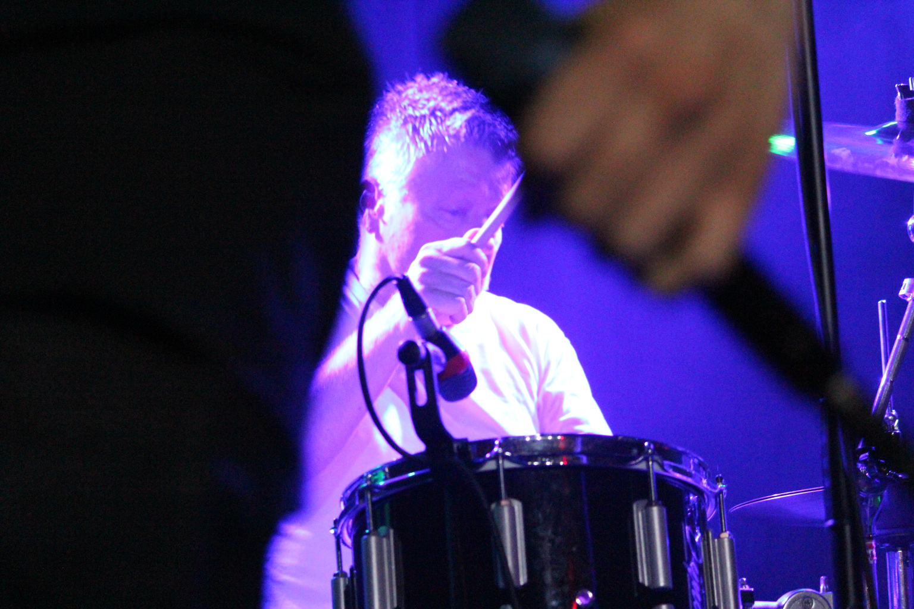
| Assessor | Tech | Aest |
|---|---|---|
| Ref | 2.5 | 2.7 |
| DeepSeek none | 2.6 | 3.8 |
| DeepSeek high | 2.8 | 3.4 |
| Luna | 3.3 | 3.4 |
| Gemini | 2.6 | 2.5 |
| Haiku | 2.4 | 3.2 |
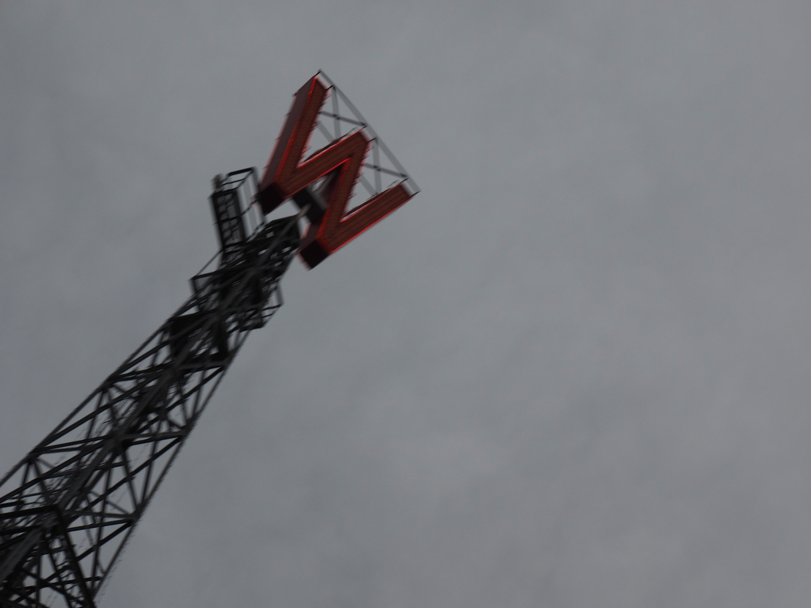
| Assessor | Tech | Aest |
|---|---|---|
| Ref | 2.5 | 3.1 |
| DeepSeek none | 2.3 | 3.6 |
| DeepSeek high | 2.0 | 2.7 |
| Luna | 2.7 | 3.7 |
| Gemini | 2.0 | 2.1 |
| Haiku | 3.4 | 3.2 |
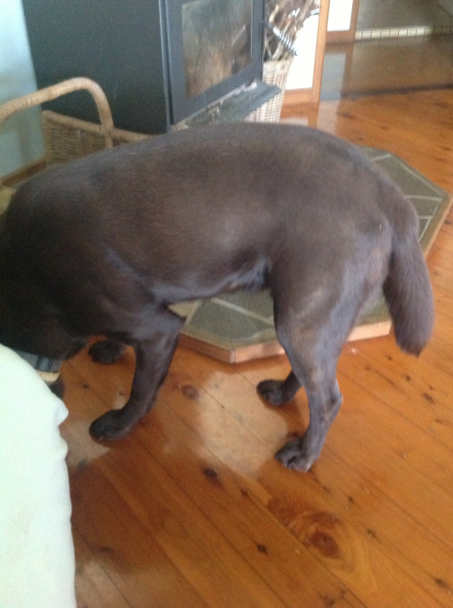
| Assessor | Tech | Aest |
|---|---|---|
| Ref | 2.6 | 2.4 |
| DeepSeek none | 3.0 | 2.2 |
| DeepSeek high | 3.0 | 2.5 |
| Luna | 2.6 | 2.4 |
| Gemini | 2.3 | 1.6 |
| Haiku | 2.9 | 2.6 |
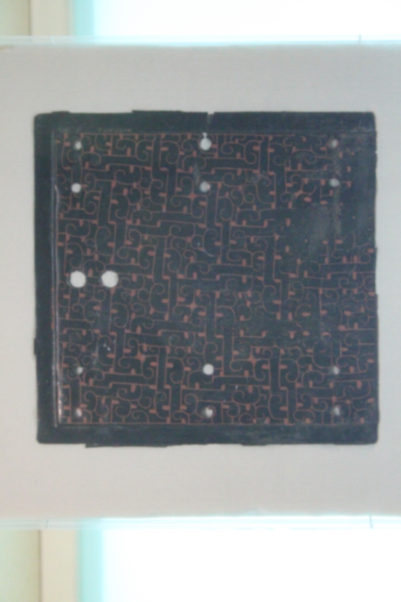
| Assessor | Tech | Aest |
|---|---|---|
| Ref | 2.7 | 3.0 |
| DeepSeek none | 2.4 | 2.6 |
| DeepSeek high | 2.5 | 2.7 |
| Luna | 2.8 | 3.0 |
| Gemini | 2.0 | 2.1 |
| Haiku | 2.2 | 2.7 |
| Assessor | Tech | Aest |
|---|---|---|
| Ref | 2.7 | 3.3 |
| DeepSeek none | 2.6 | 3.2 |
| DeepSeek high | 3.3 | 3.2 |
| Luna | 2.3 | 3.0 |
| Gemini | 2.6 | 2.7 |
| Haiku | 3.0 | 3.0 |
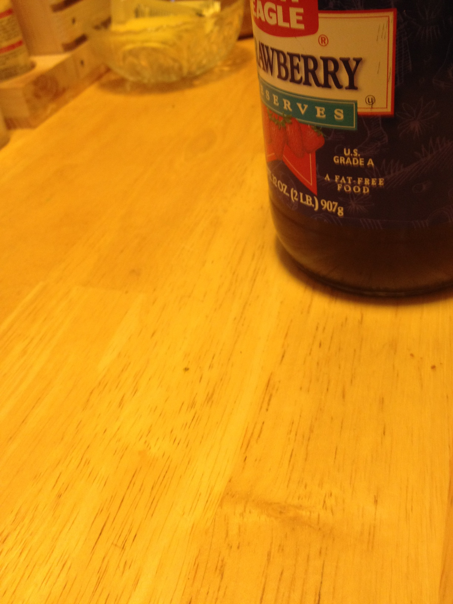
| Assessor | Tech | Aest |
|---|---|---|
| Ref | 2.7 | 2.0 |
| DeepSeek none | 3.2 | 2.2 |
| DeepSeek high | 3.6 | 2.7 |
| Luna | 3.0 | 2.5 |
| Gemini | 2.6 | 2.3 |
| Haiku | 2.8 | 2.4 |
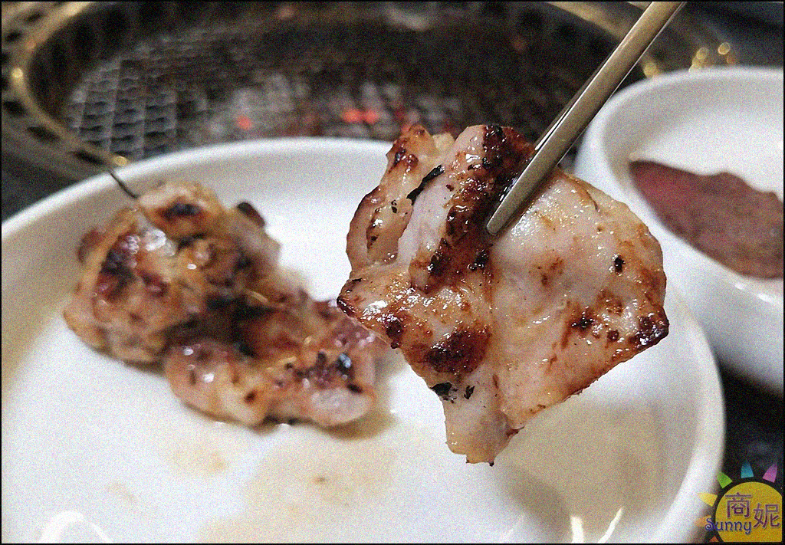
| Assessor | Tech | Aest |
|---|---|---|
| Ref | 2.8 | 3.5 |
| DeepSeek none | 3.5 | 3.5 |
| DeepSeek high | 3.8 | 3.7 |
| Luna | 2.8 | 2.8 |
| Gemini | 2.9 | 2.5 |
| Haiku | 3.2 | 3.4 |
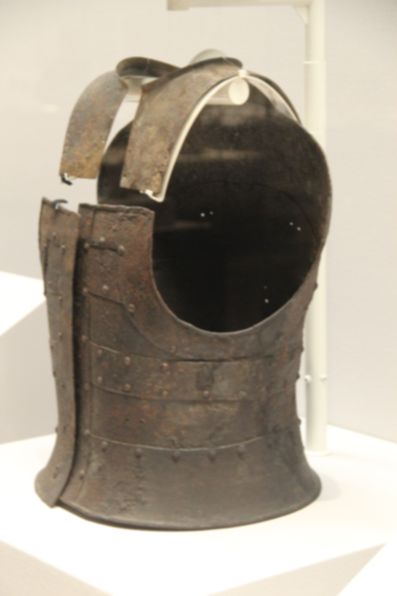
| Assessor | Tech | Aest |
|---|---|---|
| Ref | 2.9 | 3.2 |
| DeepSeek none | 3.2 | 2.6 |
| DeepSeek high | 4.0 | 3.4 |
| Luna | 3.5 | 3.6 |
| Gemini | 2.1 | 2.5 |
| Haiku | 2.5 | 2.8 |
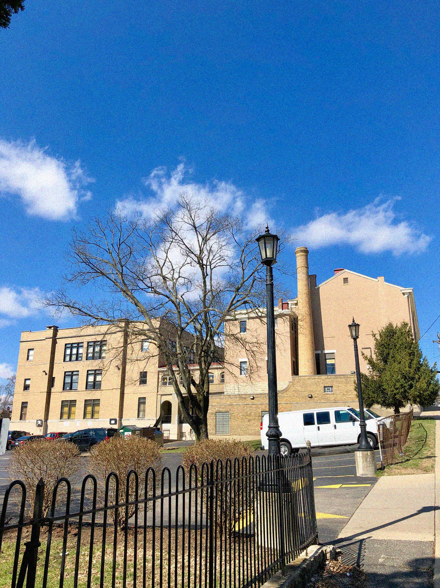
| Assessor | Tech | Aest |
|---|---|---|
| Ref | 2.9 | 3.2 |
| DeepSeek none | 3.2 | 2.6 |
| DeepSeek high | 4.0 | 3.3 |
| Luna | 3.3 | 3.0 |
| Gemini | 3.0 | 2.8 |
| Haiku | 3.8 | 3.1 |
| Assessor | Tech | Aest |
|---|---|---|
| Ref | 3.0 | 3.1 |
| DeepSeek none | 3.2 | 2.8 |
| DeepSeek high | 3.2 | 3.0 |
| Luna | 3.1 | 3.2 |
| Gemini | 2.5 | 2.2 |
| Haiku | 3.6 | 3.0 |
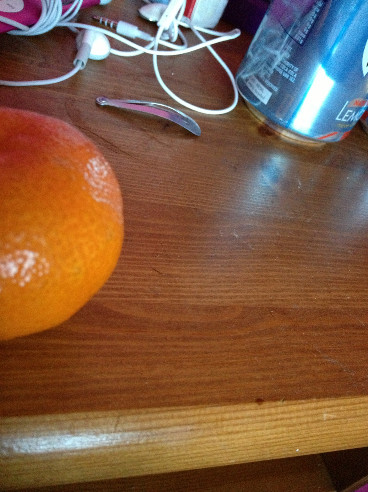
| Assessor | Tech | Aest |
|---|---|---|
| Ref | 3.0 | 2.1 |
| DeepSeek none | 3.2 | 2.2 |
| DeepSeek high | 2.9 | 2.2 |
| Luna | 3.0 | 2.4 |
| Gemini | 2.4 | 1.3 |
| Haiku | 2.9 | 2.3 |
| Assessor | Tech | Aest |
|---|---|---|
| Ref | 3.1 | 3.5 |
| DeepSeek none | 3.8 | 3.4 |
| DeepSeek high | 3.8 | 3.6 |
| Luna | 3.7 | 3.7 |
| Gemini | 3.0 | 3.1 |
| Haiku | 4.0 | 3.6 |

| Assessor | Tech | Aest |
|---|---|---|
| Ref | 3.2 | 3.3 |
| DeepSeek none | 4.0 | 3.0 |
| DeepSeek high | 3.8 | 3.4 |
| Luna | 3.8 | 3.8 |
| Gemini | 2.6 | 2.5 |
| Haiku | 4.0 | 3.1 |

| Assessor | Tech | Aest |
|---|---|---|
| Ref | 3.3 | 2.5 |
| DeepSeek none | 3.2 | 2.2 |
| DeepSeek high | 3.7 | 2.6 |
| Luna | 3.4 | 2.5 |
| Gemini | 3.0 | 1.8 |
| Haiku | 3.0 | 2.3 |

| Assessor | Tech | Aest |
|---|---|---|
| Ref | 3.3 | 2.9 |
| DeepSeek none | 3.0 | 3.2 |
| DeepSeek high | 3.5 | 3.2 |
| Luna | 3.3 | 3.1 |
| Gemini | 2.9 | 2.7 |
| Haiku | 3.0 | 3.2 |

| Assessor | Tech | Aest |
|---|---|---|
| Ref | 3.4 | 2.8 |
| DeepSeek none | 3.4 | 2.3 |
| DeepSeek high | 3.8 | 2.8 |
| Luna | 3.7 | 2.8 |
| Gemini | 3.6 | 1.9 |
| Haiku | 3.2 | 2.3 |

| Assessor | Tech | Aest |
|---|---|---|
| Ref | 3.5 | 2.8 |
| DeepSeek none | 2.8 | 2.6 |
| DeepSeek high | 3.7 | 3.0 |
| Luna | 3.8 | 3.3 |
| Gemini | 2.8 | 2.6 |
| Haiku | 3.0 | 2.9 |

| Assessor | Tech | Aest |
|---|---|---|
| Ref | 3.7 | 3.7 |
| DeepSeek none | 4.0 | 3.6 |
| DeepSeek high | 3.8 | 3.5 |
| Luna | 3.8 | 3.9 |
| Gemini | 3.5 | 2.8 |
| Haiku | 3.9 | 3.0 |

| Assessor | Tech | Aest |
|---|---|---|
| Ref | 3.7 | 3.7 |
| DeepSeek none | 3.5 | 3.6 |
| DeepSeek high | 4.1 | 4.1 |
| Luna | 3.8 | 4.2 |
| Gemini | 3.2 | 3.3 |
| Haiku | 3.7 | 3.6 |

| Assessor | Tech | Aest |
|---|---|---|
| Ref | 3.8 | 2.9 |
| DeepSeek none | 3.8 | 2.8 |
| DeepSeek high | 3.8 | 3.2 |
| Luna | 3.5 | 2.9 |
| Gemini | 3.1 | 1.8 |
| Haiku | 3.9 | 2.8 |

| Assessor | Tech | Aest |
|---|---|---|
| Ref | 3.8 | 3.6 |
| DeepSeek none | 3.2 | 2.8 |
| DeepSeek high | 4.0 | 3.0 |
| Luna | 4.0 | 3.6 |
| Gemini | 3.8 | 2.8 |
| Haiku | 3.8 | 3.0 |

| Assessor | Tech | Aest |
|---|---|---|
| Ref | 3.8 | 3.2 |
| DeepSeek none | 3.0 | 3.4 |
| DeepSeek high | 3.5 | 3.2 |
| Luna | 3.6 | 3.1 |
| Gemini | 3.6 | 2.6 |
| Haiku | 3.6 | 3.0 |

| Assessor | Tech | Aest |
|---|---|---|
| Ref | 4.0 | 3.6 |
| DeepSeek none | 4.2 | 3.2 |
| DeepSeek high | 4.2 | 3.2 |
| Luna | 4.2 | 3.2 |
| Gemini | 4.3 | 2.8 |
| Haiku | 4.4 | 3.0 |

| Assessor | Tech | Aest |
|---|---|---|
| Ref | 4.0 | 3.2 |
| DeepSeek none | 3.2 | 2.8 |
| DeepSeek high | 3.9 | 3.0 |
| Luna | 4.0 | 3.2 |
| Gemini | 3.5 | 2.4 |
| Haiku | 3.8 | 3.0 |

| Assessor | Tech | Aest |
|---|---|---|
| Ref | 4.0 | 3.6 |
| DeepSeek none | 3.5 | 3.6 |
| DeepSeek high | 3.9 | 3.4 |
| Luna | 3.9 | 3.8 |
| Gemini | 3.0 | 2.7 |
| Haiku | 3.1 | 3.2 |

| Assessor | Tech | Aest |
|---|---|---|
| Ref | 4.0 | 3.6 |
| DeepSeek none | 4.0 | 3.2 |
| DeepSeek high | 4.0 | 3.6 |
| Luna | 4.0 | 3.8 |
| Gemini | 3.9 | 2.9 |
| Haiku | 3.5 | 3.0 |

| Assessor | Tech | Aest |
|---|---|---|
| Ref | 4.1 | 3.8 |
| DeepSeek none | 4.0 | 3.5 |
| DeepSeek high | 3.8 | 3.6 |
| Luna | 3.5 | 3.7 |
| Gemini | 3.9 | 2.8 |
| Haiku | 3.8 | 3.4 |

| Assessor | Tech | Aest |
|---|---|---|
| Ref | 4.1 | 3.3 |
| DeepSeek none | 3.6 | 3.2 |
| DeepSeek high | 4.1 | 3.2 |
| Luna | 3.8 | 3.3 |
| Gemini | 4.2 | 3.0 |
| Haiku | 4.0 | 3.2 |

| Assessor | Tech | Aest |
|---|---|---|
| Ref | 4.1 | 3.6 |
| DeepSeek none | 3.6 | 3.4 |
| DeepSeek high | 3.9 | 3.4 |
| Luna | 4.1 | 4.2 |
| Gemini | 4.0 | 3.3 |
| Haiku | 3.8 | 3.6 |

| Assessor | Tech | Aest |
|---|---|---|
| Ref | 4.2 | 3.4 |
| DeepSeek none | 3.3 | 3.2 |
| DeepSeek high | 3.8 | 3.2 |
| Luna | 4.0 | 3.5 |
| Gemini | 3.3 | 2.6 |
| Haiku | 3.6 | 2.8 |

| Assessor | Tech | Aest |
|---|---|---|
| Ref | 4.2 | 3.6 |
| DeepSeek none | 3.8 | 3.2 |
| DeepSeek high | 4.0 | 3.3 |
| Luna | 4.5 | 3.8 |
| Gemini | 4.2 | 2.8 |
| Haiku | 3.8 | 3.4 |

| Assessor | Tech | Aest |
|---|---|---|
| Ref | 4.3 | 3.1 |
| DeepSeek none | 3.8 | 2.8 |
| DeepSeek high | 4.0 | 3.0 |
| Luna | 4.0 | 3.2 |
| Gemini | 3.2 | 2.7 |
| Haiku | 3.9 | 2.8 |

| Assessor | Tech | Aest |
|---|---|---|
| Ref | 4.3 | 3.1 |
| DeepSeek none | 3.6 | 3.2 |
| DeepSeek high | 4.0 | 3.0 |
| Luna | 4.0 | 3.2 |
| Gemini | 4.2 | 2.7 |
| Haiku | 3.9 | 3.0 |

| Assessor | Tech | Aest |
|---|---|---|
| Ref | 4.4 | 3.9 |
| DeepSeek none | 4.2 | 3.6 |
| DeepSeek high | 4.0 | 3.8 |
| Luna | 4.0 | 3.8 |
| Gemini | 3.1 | 3.0 |
| Haiku | 3.9 | 3.2 |

| Assessor | Tech | Aest |
|---|---|---|
| Ref | 4.4 | 3.9 |
| DeepSeek none | 4.2 | 3.2 |
| DeepSeek high | 4.2 | 3.6 |
| Luna | 4.0 | 3.7 |
| Gemini | 3.6 | 3.1 |
| Haiku | 4.0 | 3.4 |

| Assessor | Tech | Aest |
|---|---|---|
| Ref | 4.4 | 3.3 |
| DeepSeek none | 3.8 | 2.8 |
| DeepSeek high | 3.9 | 2.9 |
| Luna | 3.8 | 3.2 |
| Gemini | 3.1 | 2.3 |
| Haiku | 3.6 | 2.6 |

| Assessor | Tech | Aest |
|---|---|---|
| Ref | 4.4 | 3.9 |
| DeepSeek none | 4.0 | 4.0 |
| DeepSeek high | 4.0 | 3.8 |
| Luna | 4.0 | 3.7 |
| Gemini | 4.2 | 3.5 |
| Haiku | 3.9 | 3.4 |

| Assessor | Tech | Aest |
|---|---|---|
| Ref | 4.5 | 3.9 |
| DeepSeek none | 4.1 | 3.2 |
| DeepSeek high | 4.4 | 4.0 |
| Luna | 4.2 | 3.8 |
| Gemini | 3.9 | 3.1 |
| Haiku | 4.1 | 3.2 |

| Assessor | Tech | Aest |
|---|---|---|
| Ref | 4.5 | 3.4 |
| DeepSeek none | 4.1 | 3.6 |
| DeepSeek high | 4.2 | 3.7 |
| Luna | 4.4 | 3.6 |
| Gemini | 4.2 | 2.9 |
| Haiku | 3.9 | 3.2 |

| Assessor | Tech | Aest |
|---|---|---|
| Ref | 4.5 | 3.4 |
| DeepSeek none | 4.2 | 3.2 |
| DeepSeek high | 4.4 | 3.7 |
| Luna | 4.2 | 3.6 |
| Gemini | 3.5 | 2.9 |
| Haiku | 3.9 | 3.2 |

| Assessor | Tech | Aest |
|---|---|---|
| Ref | 4.5 | 4.1 |
| DeepSeek none | 3.8 | 4.0 |
| DeepSeek high | 4.0 | 3.9 |
| Luna | 4.1 | 4.2 |
| Gemini | 4.2 | 3.5 |
| Haiku | 3.9 | 3.7 |

| Assessor | Tech | Aest |
|---|---|---|
| Ref | 4.5 | 4.5 |
| DeepSeek none | 4.4 | 4.3 |
| DeepSeek high | 4.5 | 4.5 |
| Luna | 4.5 | 4.4 |
| Gemini | 3.5 | 3.6 |
| Haiku | 4.4 | 4.0 |

| Assessor | Tech | Aest |
|---|---|---|
| Ref | 4.6 | 3.8 |
| DeepSeek none | 4.0 | 3.5 |
| DeepSeek high | 3.8 | 3.2 |
| Luna | 4.0 | 3.8 |
| Gemini | 3.5 | 3.1 |
| Haiku | 3.9 | 3.6 |

| Assessor | Tech | Aest |
|---|---|---|
| Ref | 4.6 | 4.0 |
| DeepSeek none | 4.0 | 4.0 |
| DeepSeek high | 4.1 | 3.7 |
| Luna | 4.4 | 3.6 |
| Gemini | 3.7 | 3.1 |
| Haiku | 4.2 | 3.4 |

| Assessor | Tech | Aest |
|---|---|---|
| Ref | 4.6 | 4.3 |
| DeepSeek none | 4.2 | 4.0 |
| DeepSeek high | 4.4 | 3.9 |
| Luna | 4.3 | 4.1 |
| Gemini | 4.3 | 3.5 |
| Haiku | 4.0 | 3.8 |

| Assessor | Tech | Aest |
|---|---|---|
| Ref | 4.7 | 3.8 |
| DeepSeek none | 4.3 | 3.6 |
| DeepSeek high | 4.4 | 3.8 |
| Luna | 4.4 | 3.7 |
| Gemini | 4.6 | 3.3 |
| Haiku | 4.0 | 3.6 |

| Assessor | Tech | Aest |
|---|---|---|
| Ref | 4.7 | 3.5 |
| DeepSeek none | 4.2 | 3.6 |
| DeepSeek high | 4.0 | 3.5 |
| Luna | 4.3 | 3.6 |
| Gemini | 4.3 | 3.0 |
| Haiku | 4.4 | 3.0 |

| Assessor | Tech | Aest |
|---|---|---|
| Ref | 4.8 | 3.8 |
| DeepSeek none | 4.2 | 3.6 |
| DeepSeek high | 4.6 | 3.6 |
| Luna | 4.8 | 4.3 |
| Gemini | 4.6 | 3.3 |
| Haiku | 4.4 | 3.2 |